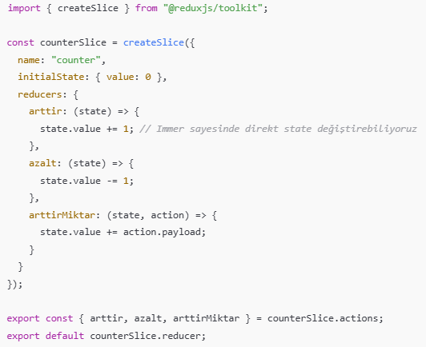
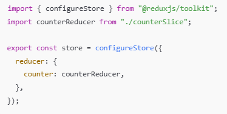
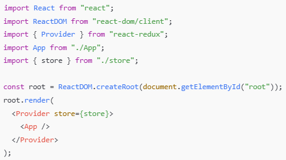
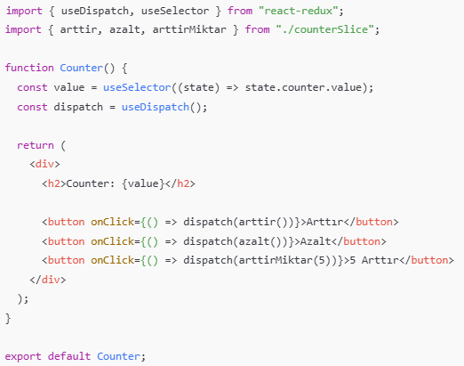

Ana Sayfa
Redux Toolkit
Redux Toolkit (RTK), Redux kullanmayı çok daha kolay ve hızlı hale getiren resmi Redux paketidir Redux’un klasik kullanımındaki, fazla kod yazma (boilerplate), action type/action creator karmaşası, reducer yazarken uzun syntax, gibi sorunları tamamen ortadan kaldırır.
Kurulum : npm install @reduxjs/toolkit react-redux
| createSlice |
configureStore |
|  |
 |
| Main.jsx |
App.jsx |
|  |
 |